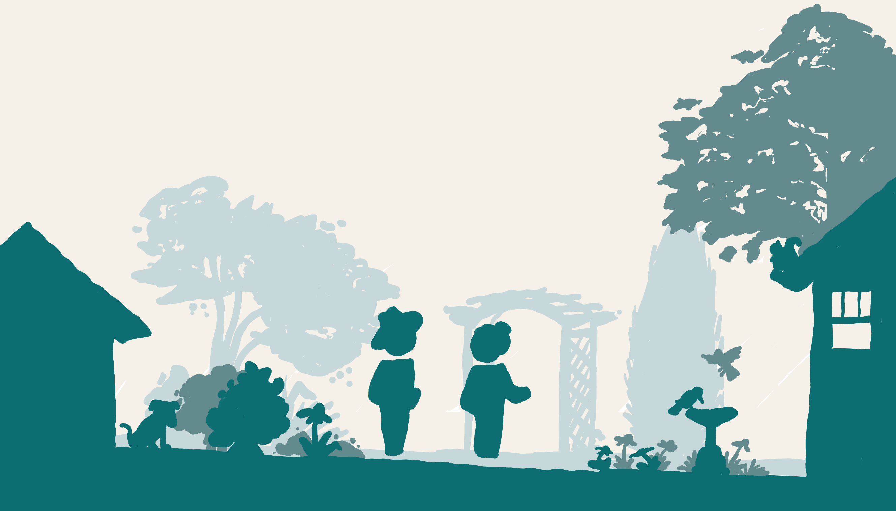

Hendersonville, NC · Est. 2025
Our mission is to connect and nourish Henderson County/Mud Creek Watershed by reimagining overlooked lands between neighborhoods and habitats as a growing network of ecological, social, inspiring, and resilient corridors.
What We Do
Cultivated Commons is a nonprofit conservation land trust transforming spaces we have learned to walk past without a second thought: utility corridors, development setbacks, abandoned lots, brownfields, and other devalued locations. The value we rebuild is multilayered, from wildlife habitat and biodiversity to stormwater management and carbon sequestration to food production and interactive art. Utilizing permaculture design and people power, we restore and cultivate these forgotten lands to social and ecological abundance: public access commons that connect and nourish our communities.
What Does it Mean to Cultivate a Commons?
Fragmented habitat across urban and suburban landscapes can connect and support native wildlife movement, pollinator networks, and biodiversity recovery. These landscapes can link human habitats too. The sites we cultivate become verdant neighborhood passageways.
Swales, berms, and perennial plantings in these corridors manage stormwater naturally, helping municipalities meet green infrastructure goals. We look for sites that can redirect and absorb runoff from big storms, returning it to the soil where it can become so much more: buffer against drought, rain gardens for mosquito-munching frogs, and fuel for free-to-eat orchards.
Speaking of eating, we prioritize sites in walking distance to neighborhoods. We cultivate a wide variety of important ecosystem plants, and we make sure that many of them are delicious and medicinal for the folks who live nearby. Imagine, instead of driving to the convenience store for a processed snack in a plastic bag, strolling to your local park to see what might be fruiting.
The Commons as Infrastructure
A commons isn't just land to protect, it's land people inhabit. Every corridor restored is designed as a neighborhood amenity: a living path where residents can walk, linger, forage, and connect with one another without ever needing a car.
These corridors provide connection to community assets like greenways, schools, farmers markets, and friends through the existing environments while restoring the relationships between neighbors — human, animal, and plant.
The goal is a network of accessible commons threading through the region, stitching communities back together one overlooked parcel at a time.

How We Work
We partner with landowners, municipalities, and neighborhoods to identify underutilized parcels — setbacks, corridors, and fragments — suitable for transformation.
Using permaculture design principles, we create layered food forest systems engineered to deliver measurable stormwater, habitat, and biodiversity outcomes.
We guide students, volunteers, and neighbors to install the commons infrastructure — building relationships and skills while establishing the ecological foundation.
Conservation easements are a proven way for land trusts to legally protect restored lands from development forever — while community stewards supply the hearts and hands to care for them.
Who We Are
Co-Founder & Chief Steward
Joey is an architect, maker, and permaculture designer based in Hendersonville, NC, with a deep commitment to ecological restoration in overlooked urban spaces. Through his decade of work in architecture, he saw an unfinished picture on each project — how will this project integrate into the community and environment at large.
With a background spanning ecological design, community organizing, and conservation strategy, Joey founded The Cultivated Commons to prove that the most transformative land is often the land no one else is looking at and how these lands can become the shared commons that define a community.
Co-Founder & Chief Naturalist
Aweed first learnt what not to do as a Marine Corps Officer, witnessing the more-than-human toll of the U.S. military occupation in Afghanistan. After earning two masters degrees in environmental policy from Columbia University, he promptly worked minimum wage, on-the-ground ecology jobs because they were more fun.
With biodiversity as a north star and humans-are-nature as an ethos, Aweed brings experience as a land trust manager, wildlife preserve ranger, foraging school founder, climate activist, habitat restorationist, and interpretive guide to help Cultivated Commons do rad projects on underloved land. He encourages you to eat kudzu.
Get Involved
Whether you're a landowner, a municipal partner, a grant maker, or simply a neighbor who wants to help — we'd love to hear from you.
Thank you for reaching out.
We'll be in touch soon — the commons is growing, one relationship at a time.